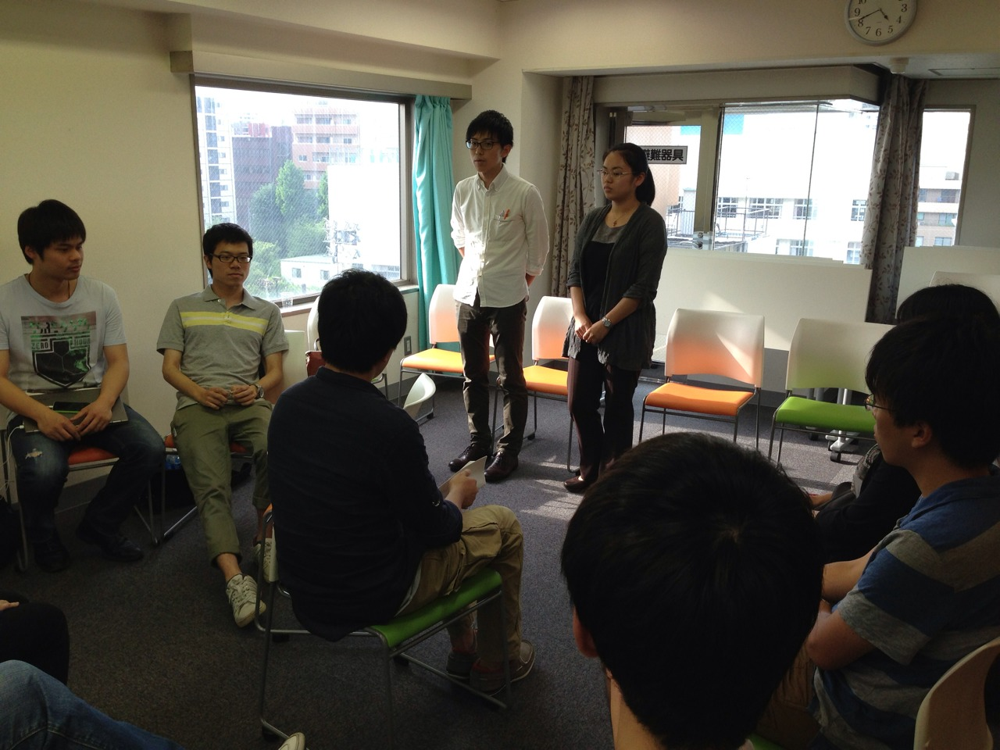
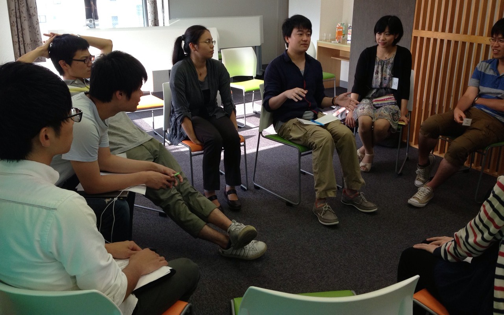

REPORT
2014年JCSN上海・杭州交流会 第一回勉強会＆OB会交流会
7月5日に今年の上海・杭州交流会の参加者で集まり、二部制で第一回の勉強会とOB会との交流会が開かれました。
第一部の勉強会では事務局から訪問予定企業の紹介（福楽門工業設計有限公司・浙江省建設投資集団公司）ののち、これらの企業に関連するテーマ（知的財産権・国有企業改革）でグループディスカッションを行いました。中国における知的財産権の現状と国有企業改革のこの後について知識を深めることが出来ました。
第二部のOB会との交流会ではOB会代表の澤田さんを始めとして、社会の各方面で活躍するOBに来ていただき、現役メンバーにメッセージを送っていただきました。加えて、昨年度の上海交流会に参加したメンバーもOB会交流会に参加し、JCSNの持つ人的ネットワークという強みを活かした有意義な会となりました。
交流会閉会後には近くのお店で懇親会も行い、OBの先輩方やメンバー同士の親睦を深めることが出来ました。
＜2014年 JCSN上海・杭州交流会 第一回勉強会及びOB会交流会概要＞
・日時 7月5日（土） １４：００～１８：００
・場所 NPO日中交流推進機構 ６階会議室
・参加者数 日本人学生、中国人留学生計１６名
・タイムテーブル
～第一部 第一回勉強会～
14:00 ・全体ミーティング
・役員からの連絡
・訪問企業紹介（フォルム上海様、浙江省建設投資集団様）
14:30 勉強会① 中国の知的財産権
15:15 勉強会② 中国の国有企業改革
16:00 休憩
～第二部 OB会交流会～
16:15 OB会抱負・OB自己紹介
昨年度交流会参加者の紹介
16:30 OB会メンバー・昨年度交流会参加者との交流
18:00 閉会＆近くの店にて懇親会

OBの紹介

去年度参加者との交流